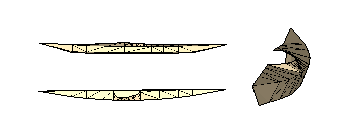

Boat Projects
Building a Whitehall
My first project in building a sailboat, for the someday I dream of… years ago I received this book on building a whitehall, and it is perhaps the most perfect representation of a boat that I can find.
Cool options to consider:
- Removable thwart, like in Chesapeake Light Crafts version
- A tent like Roger Barnes’ dinghy tent
- Dolly with bike wheels for beach launching
Skin-on-frame Kayak
- greenland style
- use traditional measurement system
- 3 fathom plus 1 cubit is length, etc
- standard european paddle
- Materials
- canvas as skin (for first one, at least)
- wood choices 1. Black locust 1. Douglas fir 1. Ash

Nested Dinghy
Should a first project be something more cookie cutter? It would certainly simplify (speed up) a build, and you can’t get anything more simplified than a kit dinghy, like the PT11
Specs
- Length: 11’ 0”
- Hull Weight: 90 lbs.
- Beam: 50 in.
- Max Payload: 518 lbs.
- Rowing Draft: 4”
- Sailing Draft: 24”
- Sail Area: 54 sq ft.
Cruising Catamaran for Lake Ontario
- A trailerable 25’-ish open deck multihull
- Ample sail plan for light wind
- Sloop rigged with Jennnaker (no pole needed)
- Pirate-red sails!
- Electric motors in each hull with regen props, backup generator
- Each hull self-serving for 1 couple with double berth
- Breeze-way hatches
- Head
- Composting toilets
- Foot-pump operated sinks, small water tank below
- Stow-away galley and nav/lounge table on deck
- Deep-V hulls so no daggerboards
- Plywood stitch and glue home construction
- Carry 3 or 4 kayaks up on trampoline
- We’ll call her the Glorious Anne-Marie (because there are 2 hulls! get it?)
- Study Plans:
- http://www.sailingcatamarans.com/strider.htm
- https://www.duckworksmagazine.com/r/plansindex/multihullsail.htm
Skin on Frame Ultralight Trimaran
- Can be built in field with minimum of tools, in emergency
- Baidrka-style kayaks as pontoons (amas)
- Inflatable bouancy bags for rigidity
- Dual skegs for very shallow draft
- Minimize gear, ground tackle, and trimming to keep ultralight to maximize speed
- Simplest field-buildable sail rig with most power:
- lateen?
Catamaran Daysailor
Jon and I inherited one from his childhood.
Cal Cat
- Specs:
- LOA:
- LWL:
- Beam:
- Sail area:
- Similar designs (for parts):
- Hobie Inspiration
- Aqua Cat 14
- Paper tiger
Repair Work
- Hulls
- Powerwash
- Spot epoxy repair, fiberglass repair under aft starboard support junction
- Redo gelcoat
- Stablize / Replace foam? There is a bunch of loose stuff in there
- Replace drain plugs, for good measure
- Trampoline
- Clean
- Replace 3/8” line in seam?
- Standing rigging
- Need four 316SS clevis pins for forward turnbuckles
- Replace all stays with 1/8” UHMWPE (40 ft)
- Need 1/8 UHMWPE, 20 ft, to lash trampoline to rear cross member
- Sail dry lube for tracks
- Running Rigging
- Replace halyard (1/8” UHMWPE, 40 ft )
- New steering assembly
- Avoids expensive pintles, and more secure
- Simpler and better steering than kick-up rudders
- Tillers: aluminum tube
- Rudder
- 3mm sheet aluminum for box
- Fabricate blade from wood
- Pittsford Lumber has sheets of Marine Okaume-Joubert plywood in 6mm 1. Epoxy and then gelcoat
- Sail: Tear near foot
- Misc Hardware
- Need 4 clevis pins to attach cross members to hulls: 1/4”-2 1/2” 316SS
- Pins for center boards are missing: fabricate from SS bolts with acrylic tubing
- Mast
- Mast step missing: fabricate from 316SS plate and a high-strength pin
- Float missing (but forums say do without)
- Spray-foam ends to seal


Pictures


Amphibious Vehicle System
What nerd hasn’t tried to figure this one out? I think the reason that we don’t have a commercial product like this is that a break-away, auto-positioning, self-launching hull system is very hard.
Electric Hatch-back
With the rise of electric outboards, a drive system is easier than ever when coupled to a high-output alternator. Or at least, would be fun to experiment with!
- Split hull stored on roof on land mode
- Hull gets placed for drive-on at boat launch and has rollers for transition into water
- Dual electric thrust pods are coupled to the wheels somehow for directional control via the steering wheel
Amphibious Truck/Camper Van
- Pontoons swing from overhead down under truck by hydraulics
- Dual hydraulic jet drives in pontoons
- Belt-driven hydraulic pump off motor for hydraulic power
Car Barge
- High-displacement, low draft drive-on LST-style carrier that stays behind when transitioning to land
- Hydraulic drive-on or roll-off deck to completely isolate the vehicle from touching water when transitioning dockside, boat launch, or even from beach
- Deck uses turn table for loading from an angle and for forward on and off. Also, incorporates a lift to raise/lower and keep COG low when onboard
- Electric propulsion driven from on-board batteries, recharged via high-output alternator on the car, shore power and/or solar PV panels
- back of the envelope math: a 20hp electric outboard draws 10kW peak (15 mph), 1.5 kW at cruise (5 mph), and a high-output alternator on a small hatchback car (4.25 ton) can produce 3.5kW at 2500 rpm.
- Remote or auto-piloting of barge from slip or mooring allows user to remain in vehicle through transition
- Hull can take many forms, including houseboat, canalboat, internal docking barge, large trimaran
- Lift points for loading onto rail flatbed for long-hauling
- Use a pivoting gantry crane instead, like a log trailer?
Hydrofoiling Buggy
With the rise of hub motors, is an axle even required? If no axle, no through-hull?
- A sand-buggy or humvee style amphibious electric vehicle
- Aluminium unibody frame sporting 4 hub motors with wheels on parallel linkage, bolted outside of the frame
- Then, hydrofoiled thrusters to go to water mode
- Mechanical simplicity to deliver maximum range, stability, traction, with minimal weight, wake, maintenance
- https://www.thewilcraft.com/